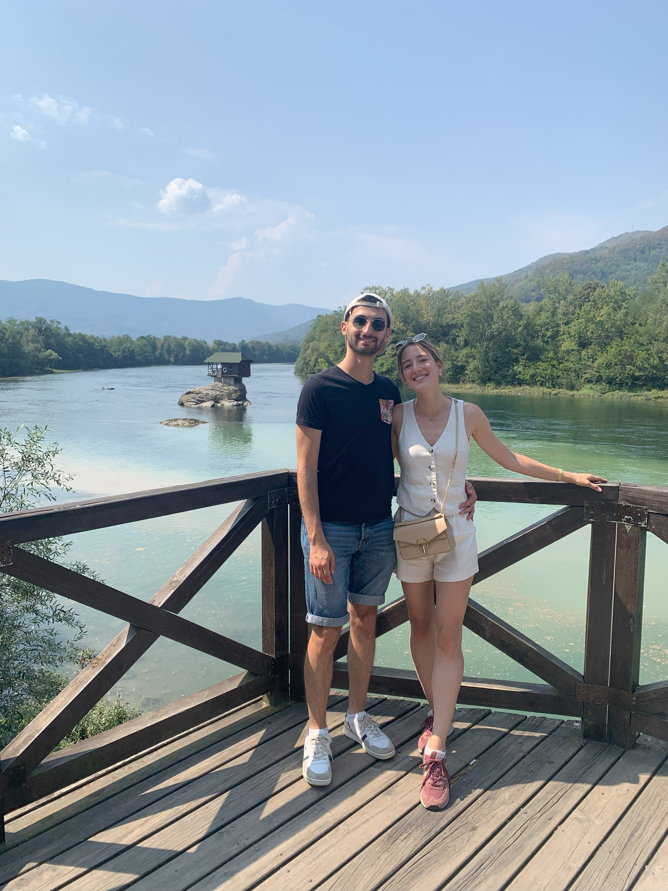
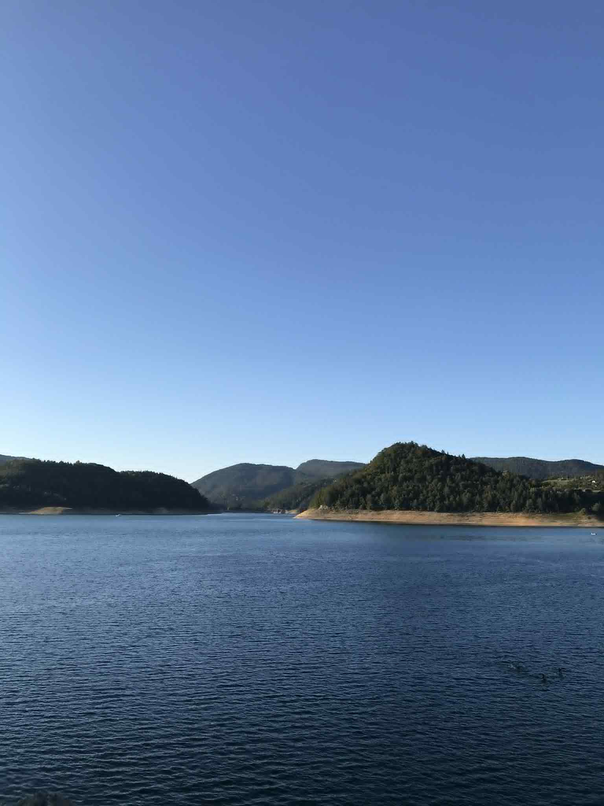
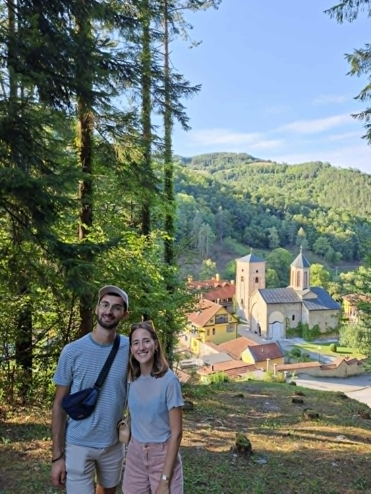
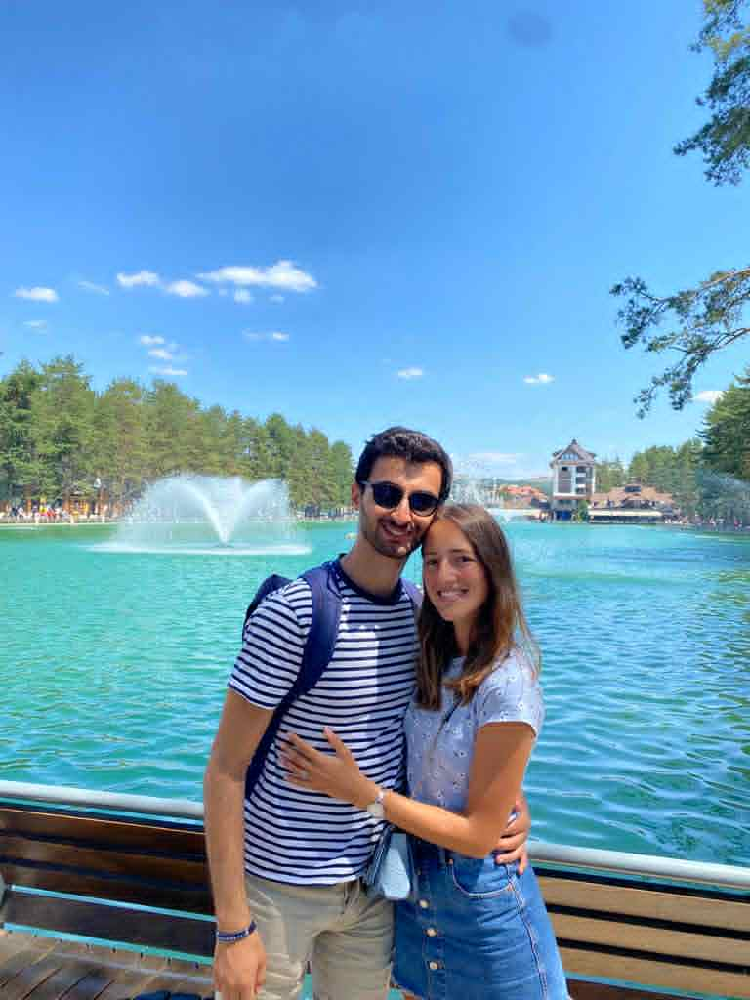
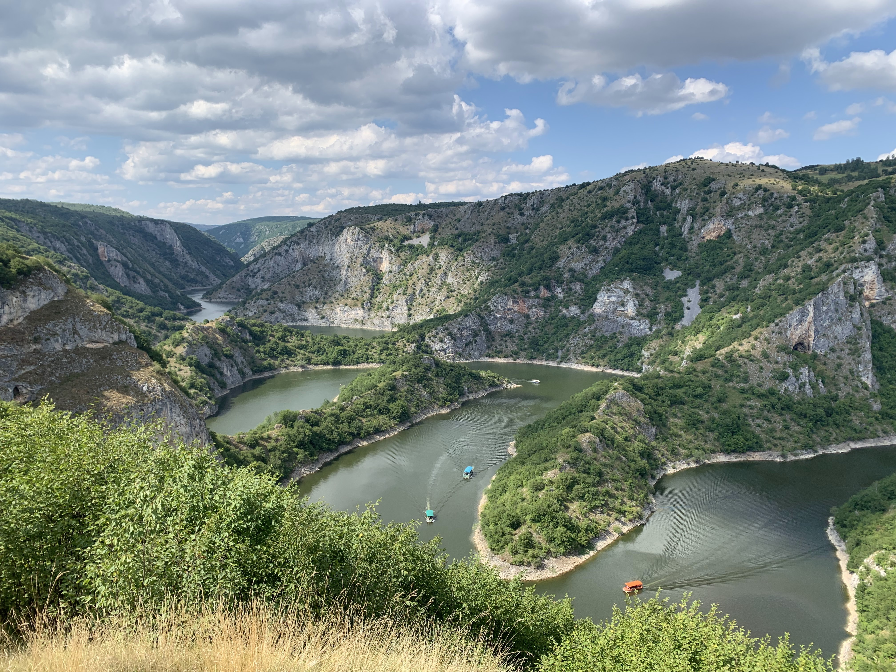
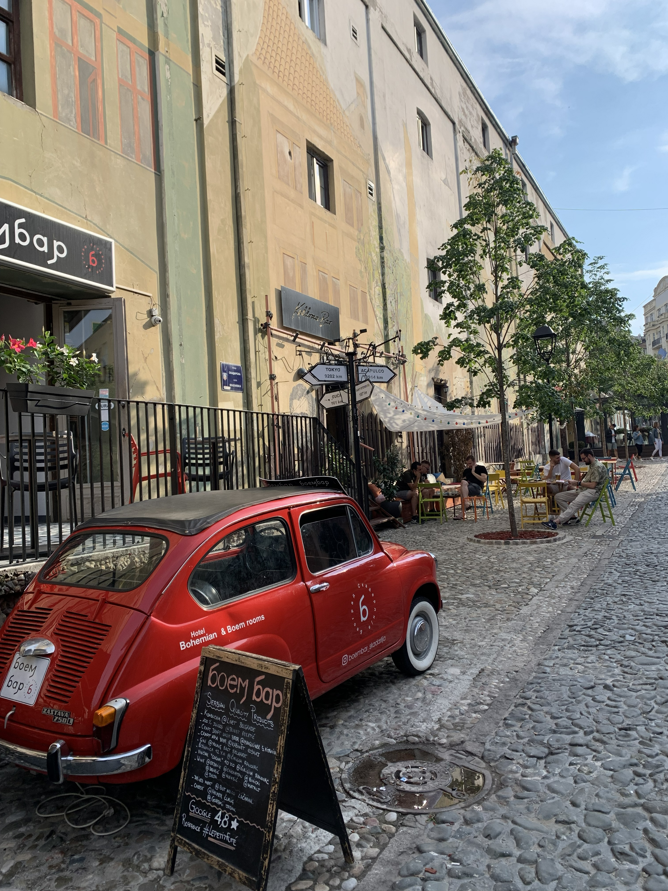
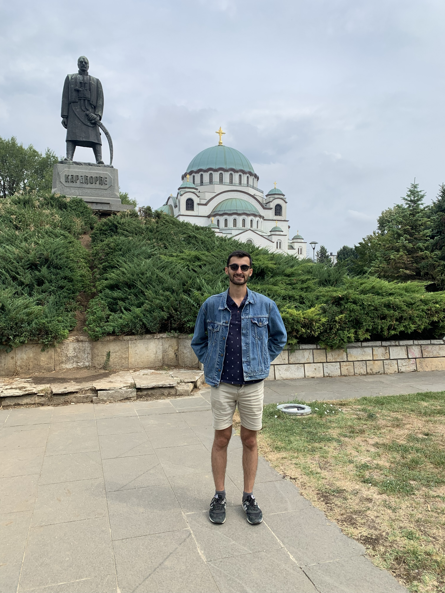

Activités autour de Bajina Bašta
Bajina Bašta est un charmant village niché au cœur de la nature et entouré par un magnifique parc national. Les environs offrent de nombreuses activités pour tous les goûts. La ville possède également de nombreux cafés et restaurants où vous pourrez savourer la cuisine locale et profiter de l'ambiance chaleureuse des lieux. Que vous soyez amateur de détente ou d'aventure, Bajina Bašta saura vous séduire par son authenticité et sa convivialité.
Baignade dans la Drina
La Drina est la rivière qui passe par Bajina Bašta. Il existe plusieurs endroits où l'on peut se
baigner.
Le premier est accessible à pied depuis le centre ville (20 min). Il s'agit de la plage
Plaža Rača, qui n'est pas
aménagée mais offre un cadre simple pour se baigner.
Un second lieu de baignade plus grand et plus
naturel est accessible en voiture (15 min) :
Kraj drinske regate
Kućica na Drini
La maison sur la Drina est l'icône de la ville, bâtie par le club de Kayak sur un petit rocher au milieu de la rivière. Un restaurant offre un point de vue sur la maison.
Le lac de Perućac
Lac accessible à 25 min en voiture ou un peu plus en bus, possible d'y louer des kayaks et des pédalos.
Un café surplombe le lac et propose des boissons et des glaces.
C'est le point de départ
pour le bateau vers Višegrad (en Bosnie, voir plus bas).

Le lac de Zaovine
Plus grand mais aussi plus loin, le lac de Zaovine est accessible à 45 min en voiture. Encore plus excentré de la ville, il est plus proche de la nature que le lac de Perućac. Vous n'y trouverez pas de cafés, mais il y a un restaurant à quelques minutes à pied de la zone de baignade principale (Brana).
Le parc Tara
Parc national dans la montagne, accessible en 30 min en voiture, vous pourrez y faire des petites
ballades comme des longues randonnées. À l'entrée du parc, un petit parcours avec des activités ludiques
est proposé.
Ce site (que nous n'avons pas personnellement testé) propose différents parcours de randonnée dans le
Parc :
komoot.com

Point de vue Banjska Stena
C'est d'ici au XIXe siècle que l'on descendait le bois jusqu'à la Drina, pour le transporter ensuite
jusqu'à Belgrade par radeaux.
C'est aujourd'hui l'un des points de vues les plus connus de Serbie, avec une magnifique vue sur
le Drina, le lac de Perućac et la montagne.
Comptez une petite heure en voiture jusqu'au
parking puis 30 min à pied.

Monastère Rača
Construit en 1276, partiellement détruit pendant l'occupation Ottomane et reconstruit en 1795. Accessible à pied depuis Bajina Bašta après une ballade d'environ 1h, il est aussi possible de s'y rendre en voiture. Attention : Vêtements couvrant épaules et genoux exigés pour entrer dans le monastère.
Mokra Gora & Drvengrad
Drvengrad (littéralement : ville de bois) est une petite ville dans la montagne où tout est en bois. La
ville à été entièrement construite par Emir Kusturica pour son film
"La vie est un miracle".
Mokra Gora est une gare située à 5 min de Drvengrad. C'est
le point de départ du train Šarganska osmica. Ce train touristique parcourt une ancienne voie ferrée en
forme de 8, reliant divers points de vues. La boucle dure environ 2h30 où vous ne verrez pas le temps
passer !
Zlatibor
Zlatibor est une station de montagne à environ 1h30 de Bajina Bašta. C'est une destination populaire pour les activités de plein air, notamment la randonnée, le vélo et le ski en hiver. Vous pourrez y emprunter la "Gondole" (un téléphérique) pour accéder à un point de vue panoramique sur la région.
Višegrad
Cette ville de Bosnie est connue pour son pont construit par le Grand Vizir Mehmed Paša Sokolović en
1577. Originaire de la région, il était de confession orthodoxe sous l'empire Ottoman. À l'adolescence,
il a été enlevé et converti à l'Islam. Cette pratique, appelée devshirmé, visait à former des militaires
pour l'empire Ottoman. En s'élevant dans les rangs de cet empire, il a pu accumuler suffisamment de
pouvoir pour faire construire ce pont dans sa ville natale.
Le pont a été rendu célèbre par le
roman "Le Pont sur la Drina" de l'écrivain Ivo Andrić (1945), qui a reçu le prix Nobel de littérature en
1961.
Pour visiter la ville, nous vous conseillons de faire l'excursion en bateau depuis le lac de
Perućac. L'excursion dure la journée et vous pourrez admirer les canyons escarpés de la Drina sur le
parcours.
Uvac
Si Banjska Stena est l'un des points de vue les plus connus de Serbie, Uvac est sûrement le plus connu. Accessible en voiture à environ 2h30 de Bajina Bašta, vous pourrez admirer un magnifique point de vue sur les méandres de la rivière. Depuis le parking il faut compter 20 min de marche.
Belgrade
La capitale de la Serbie, Belgrade, est une ville dynamique et riche en histoire. Si vous souhaitez vous
y attarder, voici quelques suggestions d'activités à faire :
Visiter la forteresse de Kalemegdan pour une vue panoramique sur la ville et le confluent de la Save et
du Danube. Dans la forteresse, le musée des armées expose divers tanks et canons.

Explorer le quartier bohème de Skadarlija, connu pour ses restaurants traditionnels serbes et son ambiance artistique.
Rentrer dans la grande église orthodoxe Sveti Sava, pour admirer son architecture impressionnante et en apprendre davantage sur l'histoire religieuse de la Serbie.
